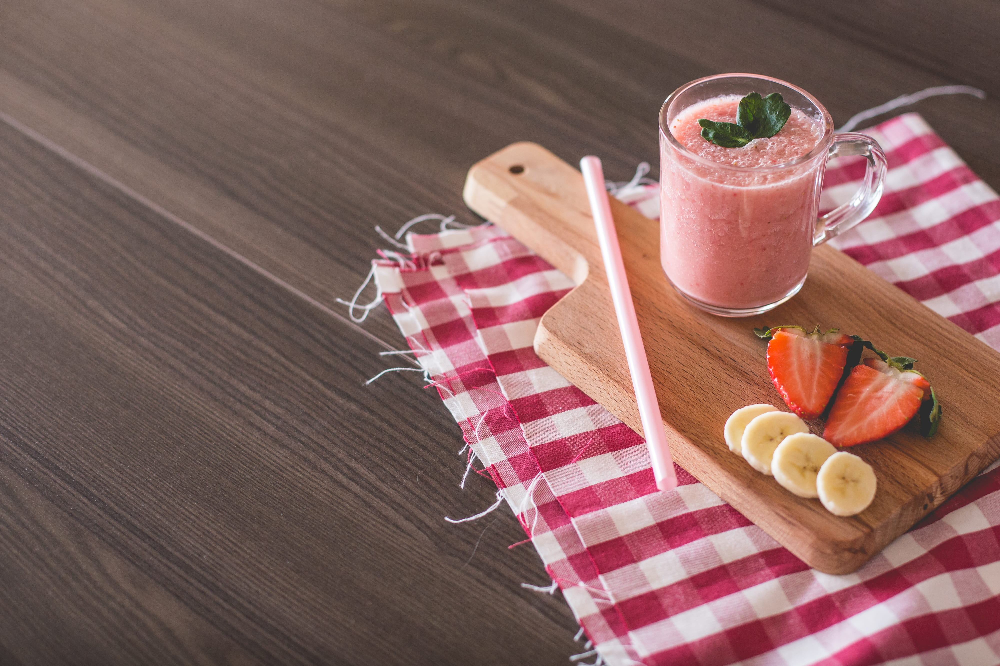

Strawberry Oatmeal Smoothie

Description
This vegan oatmeal smoothie has a deep pink color and a rich, creamy texture. Strawberries and banana team
up with oatmeal for a filling, tasty breakfast smoothie.It's very filling, and perfect for people in a rush
in the morning. You don't have to give up a good breakfast when it's this fast to make!
Ingredients
- 1 cup of milk
- 1/2 cup of rolled oats
- 14 frozen strawberries
- 1 banana, broken into chunks
- 1 and 1/2 teaspoons of white sugar (optional)
- 1/2 teaspoon of vanilla extract (optional)
Steps
- Gather the ingredients
- Blend milk, oats, strawberries, and banana in a blender until smooth. Add sugar and vanilla and
blend again until smooth.
- Pour into glasses and serve.
****Home****